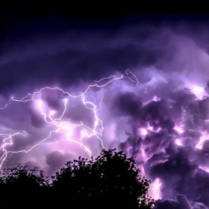
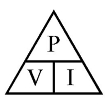
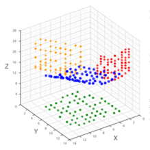
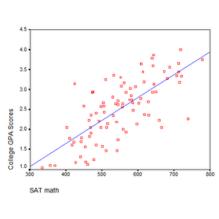

Electrical Energy
 This kind of energy is the one that results from the movement of charged particles, such as electrons, through a conductor. This type of energy is often associated with electricity and it is used to power many devices and systems; from small household appliances to large industrial machinery. It can also be generated through a variety of methods including burning fossil fuels, harnessing power, from wind or water, or using nuclear reaction. On the other hand, it can be stored in batteries or specific containers for later use. Work done = VQ since, 1=7 Work done = VIt Work done = I²Rt Work done = V²/R * t The commercial or practical unit of energy is the kilowatt/hour (kWh) which is also known as the Board of Trade unit (B.O.T) IkWh = 1000 X 60 × 60 watt - seconds 1kWh = 36 × 10⁵ Ws or joules
WATTS
 A watt is a unit of power in the International System of Units (SI). It is defined as the amount of energy transferred per second or the speed at which work is done. More specifically, one watt equals one joule of energy per second. This is commonly used to express the performance of electrical devices such as light bulbs, motors, and electronics. For example, a 100-watt light bulb uses 100 joules of energy every second it is turned on. The Watt is named after James Watt, an 18th century Scottish inventor and engineer who helped developing the steam engine.
Scatter Plot
A scatter plot is a type of chart that represents data points as a collection of points in a two-dimensional coordinate system. Each point on the chart represents the values of two variables for a single data point. The horizontal axis of the chart represents one variable while the vertical axis represents the other one. Scatter plots are commonly used in statistical analysis to identify patterns, trends, and correlations between variables. By visually examining the distribution of points on the diagram, it is possible to determine the strength and direction of the relationship between the analyzed variables.
Linear Regression
A linear regression is a type of chart that represents data points as a collection of points in a two-dimensional coordinate system. Each point on the chart represents the values of two variables. By examining the pattern of points on the chart, you can see if there is a trend. For example, if the points on the graph appear to be grouped around a straight line, this indicates a strong linear relationship between the variables. Alternatively, if the points appear randomly scattered, this indicates little or no relationship between the variables. They are commonly used in fields like statistics, data analysis, and scientific research to visualize and interpret complex data sets and predict the value of unknown data by using an already described variable.
Renewable Energy
 Renewable energy comes from natural resources that are replenished over time, such as sunlight, wind, rain, geothermal energy, and biomass. Unlike non-renewable energy sources, such as fossil fuels, renewable ones are sustainable and do not produce harmful emissions or contribute to climate change.
This is becoming an increasingly important part of the global energy mix as countries look for ways to reduce their dependence on fossil fuels and meet their energy needs in more sustainable ways. Common examples of renewable technologies are photovoltaic panels, wind turbines, hydroelectric power plants, and geothermal energy systems, among others.
It has many other benefits, including reducing greenhouse gas emissions, improving air quality and creating new economic opportunities. However, there are also challenges in scaling renewable energy systems, such as the need for large upfront investments, disruption issues, and the need for adequate energy storage solutions. Despite these challenges, many experts believe that renewable energy has the potential to play an important role in meeting the world's future needings.
Renewable energy comes from natural resources that are replenished over time, such as sunlight, wind, rain, geothermal energy, and biomass. Unlike non-renewable energy sources, such as fossil fuels, renewable ones are sustainable and do not produce harmful emissions or contribute to climate change.
This is becoming an increasingly important part of the global energy mix as countries look for ways to reduce their dependence on fossil fuels and meet their energy needs in more sustainable ways. Common examples of renewable technologies are photovoltaic panels, wind turbines, hydroelectric power plants, and geothermal energy systems, among others.
It has many other benefits, including reducing greenhouse gas emissions, improving air quality and creating new economic opportunities. However, there are also challenges in scaling renewable energy systems, such as the need for large upfront investments, disruption issues, and the need for adequate energy storage solutions. Despite these challenges, many experts believe that renewable energy has the potential to play an important role in meeting the world's future needings.